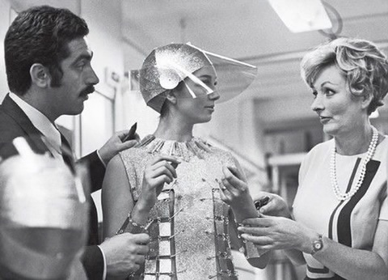

About
Fashion has always been documented — in photographs, on runways,
in magazines. After the Archive brings together editorial, runway,
and candid moments by decade, from 1900 to the present, letting
the visuals speak for themselves.
Explore Archive